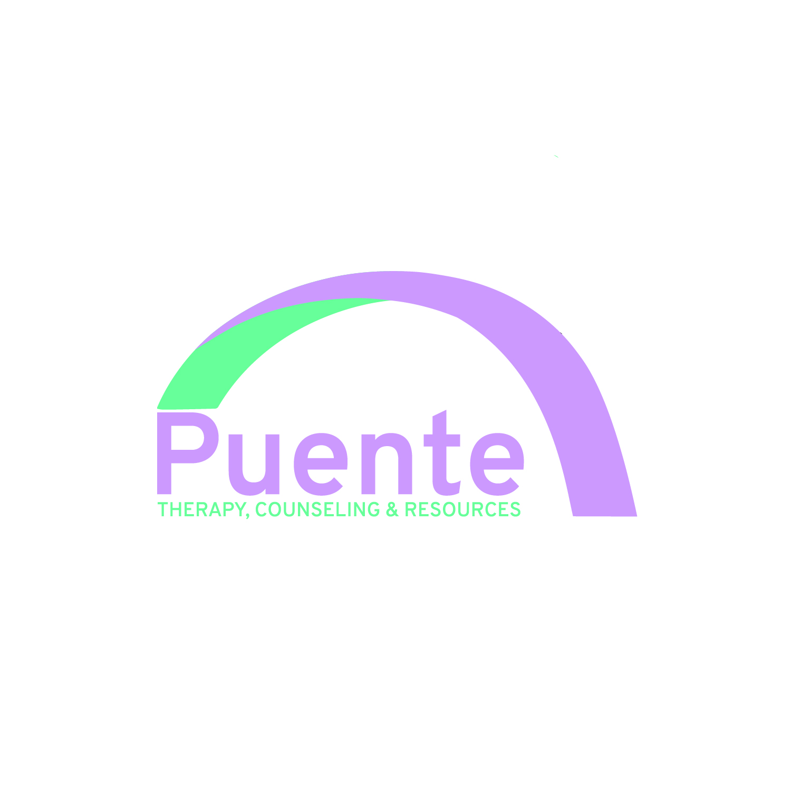
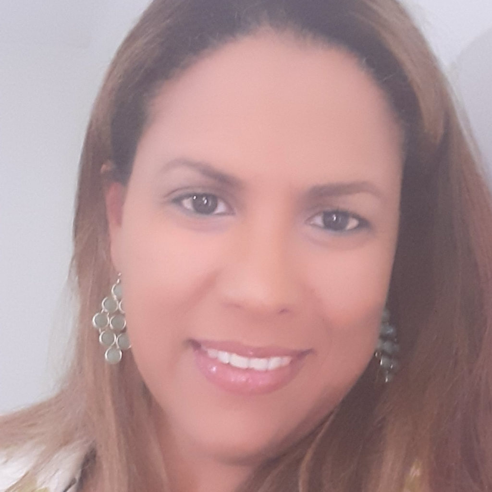

Building Bridges to Healing, Growth, and Wellness

Licensed Clinical Social Worker (LCSW)
Master of Social Work (MSW)
Grand Valley State University, Michigan
Clinical Licensure: North Carolina
Years of Clinical Practice: 14+ Years
Languages: English and Spanish
I am a clinical therapist with a Master's degree in Social Work and more than 14 years of experience providing mental health services. Throughout my career, I have had the opportunity to work with children, adolescents, adults, and families from diverse backgrounds and with a wide range of behavioral and emotional concerns.
I am passionate about helping individuals overcome behavioral and emotional challenges that may interfere with their ability to reach their goals and experience a more balanced and fulfilling life. I believe that therapy is a collaborative process and that each person brings unique experiences, strengths, and circumstances to the therapeutic relationship.
Clients can expect a welcoming, respectful, and supportive environment where diversity and individual differences are valued and embraced.
Services are provided using a holistic, client-centered approach that considers each person's unique needs, strengths, background, environment, and potential barriers to treatment.
My goal is to work collaboratively with each client to identify meaningful goals, develop practical coping and problem-solving strategies, and support positive and sustainable changes.
Puente is a behavioral health agency that provides clinical counseling services in mental health and substance use to individuals, children, and families.
The agency serves clients from diverse backgrounds and across the lifespan. Our bilingual staff provide culturally responsive services to members of the Hispanic community in their preferred language.
Our mission is to help bridge gaps in mental health care by providing accessible, compassionate, and individualized services through a systemic therapeutic approach.
Email: info@santanapllc.hush.com
Serving Individuals, Children, and Families Throughout North Carolina.
English and Spanish Services Available.